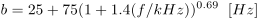
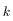
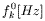
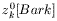
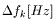

| Class FTTproc |
|
| dLabPro | Identifier | : | FTTproc |
|
| Base class | : | FBAproc |
||
| Properties | : | CS_AUTOACTIVATE | ||
| Default Instance | : | |||
| Compatibility | : | dLabPro |
||
| C/C++ | Wrapper Class | : |
class CFTTproc : public CFBAproc
|
|
| Compatibility | : | ANSI-C++ | ||
| General | Author | : | Steffen Kuerbis | |
| Version | : | 1.0.0 | ||
Synopsis
Fourier-t-transform
Description
The instances of class are signal processors which perform the Fourier-t-transform (FTT).
The FTT calculates ...
Mel-Scale
The mel-scale describes the pitch perception of human being by using the unit Bark.
It equals a linear scaling of frequency range below about 1kHz and a logarithmic scaling above 1kHz.
The relation between frequency- and mel-scale is shown by (according to [Zwicker]):
![z_{Bark}=13\arctan{(0.76f/kHz)}+3.5\arctan{(f/7.5kHz)^2)}\quad [Bark]](../resources/melproc/bark_calc_14pt.gif)
The implemented filter bank has a resolution of about 0.7Bark, that causes 30 channels up to a
cut-off-frequency of 16kHz. The critical band width is specified by following equation (according to [Zwicker]):

The really implemented parameters of the filter bank are listed in Table 1.
The transformation of the linear frequency line into the mel-scale is done by a cepstral smoothing, that is specified in next section.
Table 2: Description of mathematic symbols
| Symbol | Description |
|---|---|
|  | Channel index |
| Index of FFT-pin at channel centre frequency | |
|  | Freguency in Hz corresponding to |
|  | Channel centre frequency in Bark |

|
Theoretical width of the critical band |

|
Max. number of FFT-pins for which the upper half of the convolution core is calculated |
|  | Frequency in Hz corresponding to |

|
Scale factor |
Smoothing .... *TODO*
| [Heinbach] | Heinbach, W.: Gehörgerechte Repräsentation von Audiosignalen durch das Teiltonzeitmuster Dissertation TU München 1982 |
Class Members
| Fields | |
bandwidth | bandwidth [Bark]. |
coeff | number of frequency channels . |
finc | frequency increment [Bark]. |
ftt_type | type of ftt. |
log | range of logarithm in compatibility mode [dB] |
maxval | maximum value of samples in compatibility mode |
norm_coeff | normalize factor |
sm_coeff | smooth coefficient |
startfreq | start frequency [Hz]. |
| [Inherited fields] | |
| Options | |
/noreset | Do not reset filter states on -analyze. |
| [Inherited oprtions] | |
| Methods | |
-analyze | <data dSignal> <data dPitch> <data dReal> <data dImag> <FTTproc this> -analyze Run ftt filtering. |
-status | <FTTproc this> -status Display status information. |
| [Inherited methods] | |
| C/C++ API | |
| (see method list and base class for additional C/C++ functions) | |
CFTTproc::AnalyzeFrame | public: INT16 CFTTproc::AnalyzeFrame();Analyse Derived instances of FBAproc should override method Analyse() to add the desired functionality |
CFTTproc::InitBuffers | protected: INT16 CFTTproc::InitBuffers();Initialize internal buffers. |
CFTTproc::PrepareOutput | public: virtual void CFTTproc::PrepareOutput(CData* dResult); |
| Errors | |
FTTproc1018 | Parameters len, wlen and crate not equal. wlen is used! |
FTTproc1019 | Window type is '%s'. FTT sets wtype to '%s'! |
FTTproc1020 | FTT type is '%s'. FTT needs ftt_type '%s'. |
| [Inherited errors] | |